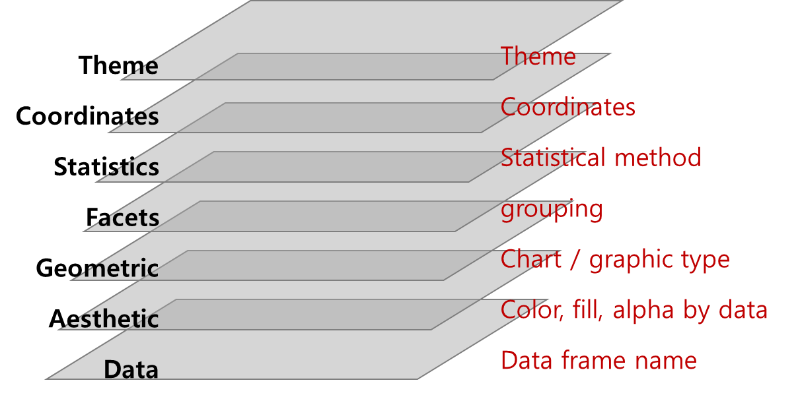

library(tidyverse)
library(rstatix)
library(broom)
library(here)
data <- read_csv(here("data/raw/tutorial_ipa.csv"))
result <- data %>%
select(-PatientID) %>%
mutate(across(c(-IPA, -serum_AGT, -BALF_AGT, -BDG), factor)) Data Science in Healthcare Field with R
07 Others
Statistics
e.g. t_test()
result %>% t_test(serum_AGT ~ IPA)# A tibble: 1 × 8
.y. group1 group2 n1 n2 statistic df p
* <chr> <chr> <chr> <int> <int> <dbl> <dbl> <dbl>
1 serum_AGT 0 1 163 101 -5.30 109. 0.000000609result %>% t_test(BALF_AGT ~ IPA)# A tibble: 1 × 8
.y. group1 group2 n1 n2 statistic df p
* <chr> <chr> <chr> <int> <int> <dbl> <dbl> <dbl>
1 BALF_AGT 0 1 128 92 -9.34 95.3 4.22e-15result %>% t_test(BDG ~ IPA)# A tibble: 1 × 8
.y. group1 group2 n1 n2 statistic df p
* <chr> <chr> <chr> <int> <int> <dbl> <dbl> <dbl>
1 BDG 0 1 29 43 -2.33 69.9 0.0227post-hoc analysis
# Compare supp levels after grouping the data by "dose"
# ::::::::::::::::::::::::::::::::::::::::
df %>%
group_by(dose) %>%
t_test(data = ., len ~ supp) %>%
adjust_pvalue(method = "bonferroni") %>%
add_significance("p.adj")
#> # A tibble: 3 × 11
#> dose .y. group1 group2 n1 n2 statistic df p p.adj p.adj.…¹
#> <dbl> <chr> <chr> <chr> <int> <int> <dbl> <dbl> <dbl> <dbl> <chr>
#> 1 0.5 len OJ VC 10 10 3.17 15.0 0.00636 0.0191 *
#> 2 1 len OJ VC 10 10 4.03 15.4 0.00104 0.00312 **
#> 3 2 len OJ VC 10 10 -0.0461 14.0 0.964 1 ns
#> # … with abbreviated variable name ¹p.adj.signiftidy - statistic result
model <- glm(formula = IPA ~ serum_AGT + BALF_AGT, data = result)
model
Call: glm(formula = IPA ~ serum_AGT + BALF_AGT, data = result)
Coefficients:
(Intercept) serum_AGT BALF_AGT
0.2302 0.0741 0.1065
Degrees of Freedom: 218 Total (i.e. Null); 216 Residual
(결측으로 인하여 46개의 관측치가 삭제되었습니다.)
Null Deviance: 53.35
Residual Deviance: 32.94 AIC: 214.6summary(model)
Call:
glm(formula = IPA ~ serum_AGT + BALF_AGT, data = result)
Deviance Residuals:
Min 1Q Median 3Q Max
-0.9882 -0.2302 -0.2302 0.2678 0.7698
Coefficients:
Estimate Std. Error t value Pr(>|t|)
(Intercept) 0.23024 0.03110 7.404 2.93e-12 ***
serum_AGT 0.07410 0.02270 3.265 0.00127 **
BALF_AGT 0.10646 0.01105 9.637 < 2e-16 ***
---
Signif. codes: 0 '***' 0.001 '**' 0.01 '*' 0.05 '.' 0.1 ' ' 1
(Dispersion parameter for gaussian family taken to be 0.1525152)
Null deviance: 53.352 on 218 degrees of freedom
Residual deviance: 32.943 on 216 degrees of freedom
(결측으로 인하여 46개의 관측치가 삭제되었습니다.)
AIC: 214.65
Number of Fisher Scoring iterations: 2tidy(model)# A tibble: 3 × 5
term estimate std.error statistic p.value
<chr> <dbl> <dbl> <dbl> <dbl>
1 (Intercept) 0.230 0.0311 7.40 2.93e-12
2 serum_AGT 0.0741 0.0227 3.27 1.27e- 3
3 BALF_AGT 0.106 0.0110 9.64 1.64e-18Visualization

The “grammar” contains more definitions for graphics elements
- coordinate system: e.g. Cartesian, polar, map projections
- geoms: describe type of geometric objects that represent data (points, lines, polygons
- aesthetics: describe visual characteristics that represent data (position, size, color, shape, transparency, fill.)
- scales: for each aesthetic: log scales, color scales, size scales, shape scales.
- stats : describe statistical transformations that typically summarize data: counts, means, medians, regression lines.
- facets: describe how data is split into subsets and displayed as multiple, separate small graphs.
- Theme: controls appearance of non-data elements